集合啦！動物森友會 - 地毯圖庫全輯
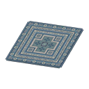
藍色基裡姆地毯
Blue kilim-style carpet
あおいキリムのカーペット
佔地尺寸：5.0 × 5.0（大型 (L)）
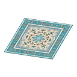
藍色波斯地毯
Blue Persian rug
あおいペルシャじゅうたん
佔地尺寸：5.0 × 5.0（大型 (L)）
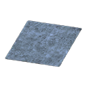
藍色長毛地毯
Blue shaggy rug
あおいシャギーなラグ
佔地尺寸：5.0 × 5.0（大型 (L)）
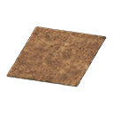
茶色長毛地毯
Brown shaggy rug
ちゃいろいシャギーなラグ
佔地尺寸：5.0 × 5.0（大型 (L)）
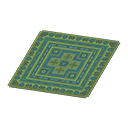
綠色基裡姆地毯
Green kilim-style carpet
みどりのキリムのカーペット
佔地尺寸：5.0 × 5.0（大型 (L)）
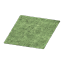
綠色長毛地毯
Green shaggy rug
みどりのシャギーなラグ
佔地尺寸：5.0 × 5.0（大型 (L)）
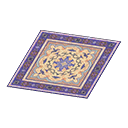
紫色波斯地毯
Purple Persian rug
むらさきのペルシャじゅうたん
佔地尺寸：5.0 × 5.0（大型 (L)）
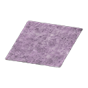
紫色長毛地毯
Purple shaggy rug
むらさきのシャギーなラグ
佔地尺寸：5.0 × 5.0（大型 (L)）
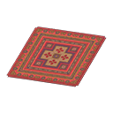
紅色基裡姆地毯
Red kilim-style carpet
あかいキリムのカーペット
佔地尺寸：5.0 × 5.0（大型 (L)）
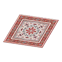
紅色波斯地毯
Red Persian rug
あかいペルシャじゅうたん
佔地尺寸：5.0 × 5.0（大型 (L)）
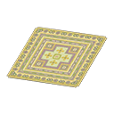
黃色基裡姆地毯
Yellow kilim-style carpet
きいろいキリムのカーペット
佔地尺寸：5.0 × 5.0（大型 (L)）
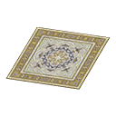
黃色波斯地毯
Yellow Persian rug
きいろいペルシャじゅうたん
佔地尺寸：5.0 × 5.0（大型 (L)）
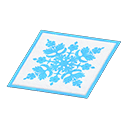
藍色夏威夷拼布地毯
Blue Hawaiian quilt rug
あおいハワイアンキルトのラグ
佔地尺寸：4.0 × 4.0（大型 (L)）
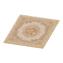
米色優雅地毯
Elegant beige rug
ベージュのエレガントなラグ
佔地尺寸：4.0 × 4.0（大型 (L)）
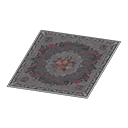
黑色優雅地毯
Elegant black rug
ブラックのエレガントなラグ
佔地尺寸：4.0 × 4.0（大型 (L)）
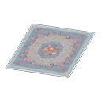
藍色優雅地毯
Elegant blue rug
ブルーのエレガントなラグ
佔地尺寸：4.0 × 4.0（大型 (L)）
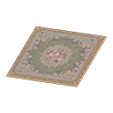
棕色優雅地毯
Elegant brown rug
ブラウンのエレガントなラグ
佔地尺寸：4.0 × 4.0（大型 (L)）
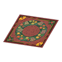
聖誕節地毯
Festive rug
クリスマスなラグ
佔地尺寸：4.0 × 4.0（大型 (L)）
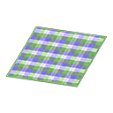
綠色格紋拼布地毯
Green checked rug
みどりのチェックキルトのラグ
佔地尺寸：4.0 × 4.0（大型 (L)）
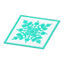
綠色夏威夷拼布地毯
Green Hawaiian quilt rug
みどりのハワイアンキルトのラグ
佔地尺寸：4.0 × 4.0（大型 (L)）
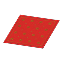
中式地毯
Imperial rug
ちゅうかなラグ
佔地尺寸：4.0 × 4.0（大型 (L)）
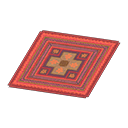
巧美生活地毯
Large Paradise Planning rug
タクミライフのカーペット
佔地尺寸：4.0 × 4.0（大型 (L)）
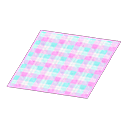
桃紅色格紋拼布地毯
Peach checked rug
ももいろチェックキルトのラグ
佔地尺寸：4.0 × 4.0（大型 (L)）
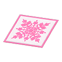
粉紅色夏威夷拼布地毯
Pink Hawaiian quilt rug
ピンクのハワイアンキルトのラグ
佔地尺寸：4.0 × 4.0（大型 (L)）
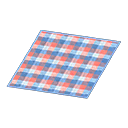
紅藍格紋拼布地毯
Red-and-blue checked rug
あかあおチェックキルトのラグ
佔地尺寸：4.0 × 4.0（大型 (L)）
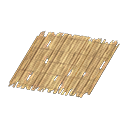
舊草蓆
Shanty mat
ふるいむしろのラグ
佔地尺寸：4.0 × 4.0（大型 (L)）
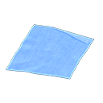
邋遢地毯
Sloppy rug
だらしないラグ
佔地尺寸：4.0 × 4.0（大型 (L)）
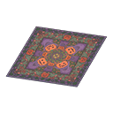
萬聖節地毯
Spooky rug
ハロウィンなラグ
佔地尺寸：4.0 × 4.0（大型 (L)）
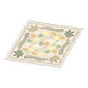
感恩節地毯
Turkey Day rug
サンクスギビングなラグ
佔地尺寸：4.0 × 4.0（大型 (L)）
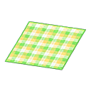
黃色格紋拼布地毯
Yellow checked rug
きいろいチェックキルトのラグ
佔地尺寸：4.0 × 4.0（大型 (L)）
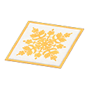
黃色夏威夷拼布地毯
Yellow Hawaiian quilt rug
きいろいハワイアンキルトのラグ
佔地尺寸：4.0 × 4.0（大型 (L)）
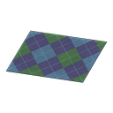
藍色菱格紋地毯
Blue argyle rug
あおいアーガイルのラグ
佔地尺寸：4.0 × 3.0（大型 (L)）
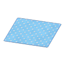
藍色點點地墊
Blue dotted rug
ブルードットのラグ
佔地尺寸：4.0 × 3.0（大型 (L)）
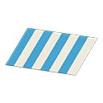
藍色粗橫紋地毯
Blue stripes rug
あおボーダーのラグ
佔地尺寸：4.0 × 3.0（大型 (L)）
藍色波浪地毯
Blue wavy rug
あおいウェーブのラグ
佔地尺寸：4.0 × 3.0（大型 (L)）
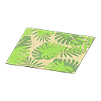
植物圖案地毯
Botanical rug
ボタニカルなラグ
佔地尺寸：4.0 × 3.0（大型 (L)）
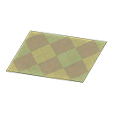
茶色菱格紋地毯
Brown argyle rug
ちゃいろいアーガイルのラグ
佔地尺寸：4.0 × 3.0（大型 (L)）
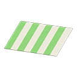
綠色粗橫紋地毯
Green stripes rug
みどりボーダーのラグ
佔地尺寸：4.0 × 3.0（大型 (L)）
摩登波浪地毯
Modern wavy rug
モダンなウェーブのラグ
佔地尺寸：4.0 × 3.0（大型 (L)）
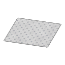
灰階配色點點地墊
Monochromatic dotted rug
モノクロドットのラグ
佔地尺寸：4.0 × 3.0（大型 (L)）
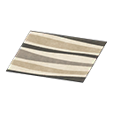
灰階配色波浪地毯
Monochromatic wavy rug
モノクロウェーブのラグ
佔地尺寸：4.0 × 3.0（大型 (L)）
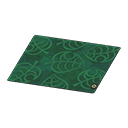
Nook Inc.正方形地毯
Nook Inc. silk rug
たぬきかいはつのスクエアラグ
佔地尺寸：4.0 × 3.0（大型 (L)）
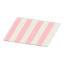
桃紅色粗橫紋地毯
Peach stripes rug
ももいろボーダーのラグ
佔地尺寸：4.0 × 3.0（大型 (L)）
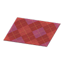
紅色菱格紋地毯
Red argyle rug
あかいアーガイルのラグ
佔地尺寸：4.0 × 3.0（大型 (L)）
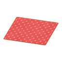
紅色點點地墊
Red dotted rug
レッドドットのラグ
佔地尺寸：4.0 × 3.0（大型 (L)）
紅色波浪地毯
Red wavy rug
あかいウェーブのラグ
佔地尺寸：4.0 × 3.0（大型 (L)）
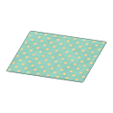
復古點點地毯
Retro dotted rug
レトロドットのラグ
佔地尺寸：4.0 × 3.0（大型 (L)）
黃色菱格紋地毯
Yellow argyle rug
きいろいアーガイルのラグ
佔地尺寸：4.0 × 3.0（大型 (L)）
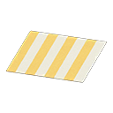
黃色粗橫紋地毯
Yellow stripes rug
きいろボーダーのラグ
佔地尺寸：4.0 × 3.0（大型 (L)）
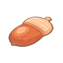
橡栗地毯
Acorn rug
どんぐりのラグ
佔地尺寸：3.0 × 3.0（中型 (M)）
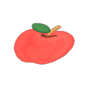
蘋果地毯
Apple rug
リンゴのラグ
佔地尺寸：3.0 × 3.0（中型 (M)）
鈴錢袋地毯
Bell-bag rug
ベルぶくろのラグ
佔地尺寸：3.0 × 3.0（中型 (M)）
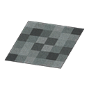
灰階配色磚塊地毯
Black blocks rug
モノクロブロックのラグ
佔地尺寸：3.0 × 3.0（中型 (M)）
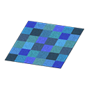
藍色磚塊地毯
Blue blocks rug
あおブロックのラグ
佔地尺寸：3.0 × 3.0（中型 (M)）
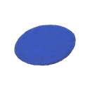
中型藍色圓地墊
Blue medium round mat
あおいラウンドマット・M
佔地尺寸：3.0 × 3.0（中型 (M)）
復活節地毯
Bunny Day rug
イースターなラグ
佔地尺寸：3.0 × 3.0（中型 (M)）
櫻桃地毯
Cherry rug
さくらんぼのラグ
佔地尺寸：3.0 × 3.0（中型 (M)）
櫻花地毯
Cherry-blossom rug
さくらのラグ
佔地尺寸：3.0 × 3.0（中型 (M)）
Cinnamoroll地毯
Cinnamoroll rug
シナモロールなラグ
佔地尺寸：3.0 × 3.0（中型 (M)）
餅乾地毯
Cookie rug
ビスケットのラグ
佔地尺寸：3.0 × 3.0（中型 (M)）
地球地毯
Earth rug
ちきゅうのラグ
佔地尺寸：3.0 × 3.0（中型 (M)）
魚兒地毯
Fish rug
おサカナのラグ
佔地尺寸：3.0 × 3.0（中型 (M)）
雲朵地毯
Fluffy rug
もくもくのラグ
佔地尺寸：3.0 × 3.0（中型 (M)）
美式足球地毯
Football rug
アメフトのラグ
佔地尺寸：3.0 × 3.0（中型 (M)）
化石地毯
Fossil rug
かせきのラグ
佔地尺寸：3.0 × 3.0（中型 (M)）
Hello Kitty地毯
Hello Kitty rug
ハローキティなラグ
佔地尺寸：3.0 × 3.0（中型 (M)）
中型象牙色圓地墊
Ivory medium round mat
アイボリーのラウンドマット・M
佔地尺寸：3.0 × 3.0（中型 (M)）
Kerokerokeroppi地毯
Kerokerokeroppi rug
けろけろけろっぴなラグ
佔地尺寸：3.0 × 3.0（中型 (M)）
Kiki & Lala地毯
Kiki & Lala rug
キキ&ララなラグ
佔地尺寸：3.0 × 3.0（中型 (M)）
蕾絲地毯
Lacy rug
レースのラグ
佔地尺寸：3.0 × 3.0（中型 (M)）
瓢蟲地毯
Ladybug rug
テントウムシのラグ
佔地尺寸：3.0 × 3.0（中型 (M)）

球蓋姆的雲地毯
Lakitu's Cloud rug
ジュゲムのくものラグ
佔地尺寸：3.0 × 3.0（中型 (M)）
魔法陣地毯
Magic-circle rug
まほうじんのラグ
佔地尺寸：3.0 × 3.0（中型 (M)）
楓葉地毯
Maple-leaf rug
もみじのラグ
佔地尺寸：3.0 × 3.0（中型 (M)）
人魚地毯
Mermaid rug
マーメイドなラグ
佔地尺寸：3.0 × 3.0（中型 (M)）
月之地毯
Moon rug
つきのラグ
佔地尺寸：3.0 × 3.0（中型 (M)）
蘑菇地毯
Mush rug
キノコのラグ
佔地尺寸：3.0 × 3.0（中型 (M)）
My Melody地毯
My Melody rug
マイメロディなラグ
佔地尺寸：3.0 × 3.0（中型 (M)）
Nook Inc.植物圖案地毯
Nook Inc. botanical rug
たぬきかいはつのボタニカルラグ
佔地尺寸：3.0 × 3.0（中型 (M)）
Nook Inc.地毯
Nook Inc. rug
たぬきかいはつのラグ
佔地尺寸：3.0 × 3.0（中型 (M)）
橘子地毯
Orange rug
オレンジのラグ
佔地尺寸：3.0 × 3.0（中型 (M)）
桃子地毯
Peach rug
モモのラグ
佔地尺寸：3.0 × 3.0（中型 (M)）
梨子地毯
Pear rug
ナシのラグ
佔地尺寸：3.0 × 3.0（中型 (M)）
粉紅色愛心地毯
Pink heart rug
ピンクハートのラグ
佔地尺寸：3.0 × 3.0（中型 (M)）
粉紅色玫瑰地毯
Pink rose rug
ピンクローズのラグ
佔地尺寸：3.0 × 3.0（中型 (M)）
Pompompurin地毯
Pompompurin rug
ポムポムプリンなラグ
佔地尺寸：3.0 × 3.0（中型 (M)）
紫色愛心地毯
Purple heart rug
パープルハートのラグ
佔地尺寸：3.0 × 3.0（中型 (M)）
唱片地毯
Record rug
レコードのラグ
佔地尺寸：3.0 × 3.0（中型 (M)）
紅色磚塊地毯
Red blocks rug
あかブロックのラグ
佔地尺寸：3.0 × 3.0（中型 (M)）
中型紅色圓地墊
Red medium round mat
あかいラウンドマット・M
佔地尺寸：3.0 × 3.0（中型 (M)）
紅色玫瑰地毯
Red rose rug
レッドローズのラグ
佔地尺寸：3.0 × 3.0（中型 (M)）
紅色西瓜地毯
Red watermelon rug
あかいスイカのラグ
佔地尺寸：3.0 × 3.0（中型 (M)）
三葉草地毯
Shamrock rug
シャムロックのラグ
佔地尺寸：3.0 × 3.0（中型 (M)）
貝殼地毯
Shell rug
かいがらのラグ
佔地尺寸：3.0 × 3.0（中型 (M)）
中型卡其色簡約地墊
Simple medium avocado mat
カーキのシンプルマット・M
佔地尺寸：3.0 × 3.0（中型 (M)）
中型黑色簡約地墊
Simple medium black mat
くろいシンプルマット・M
佔地尺寸：3.0 × 3.0（中型 (M)）
中型藍色簡約地墊
Simple medium blue mat
あおいシンプルマット・M
佔地尺寸：3.0 × 3.0（中型 (M)）
中型茶色簡約地墊
Simple medium brown mat
ちゃいろいシンプルマット・M
佔地尺寸：3.0 × 3.0（中型 (M)）
中型橘色簡約地墊
Simple medium orange mat
オレンジのシンプルマット・M
佔地尺寸：3.0 × 3.0（中型 (M)）
中型紫色簡約地墊
Simple medium purple mat
むらさきのシンプルマット・M
佔地尺寸：3.0 × 3.0（中型 (M)）
中型紅色簡約地墊
Simple medium red mat
あかいシンプルマット・M
佔地尺寸：3.0 × 3.0（中型 (M)）
骷髏地毯
Skull rug
スカルのラグ
佔地尺寸：3.0 × 3.0（中型 (M)）
雪花地毯
Snowflake rug
スノーフレークなラグ
佔地尺寸：3.0 × 3.0（中型 (M)）
舞臺地毯
Stage rug
ステージのラグ
佔地尺寸：3.0 × 3.0（中型 (M)）
星空地毯
Starry-skies rug
ほしぞらのラグ
佔地尺寸：3.0 × 3.0（中型 (M)）
夏天貝殼地毯
Summer-shell rug
なつのかいがらのラグ
佔地尺寸：3.0 × 3.0（中型 (M)）
向日葵地毯
Sunflower rug
ひまわりのラグ
佔地尺寸：3.0 × 3.0（中型 (M)）
樹樁地毯
Tree-stump rug
きりかぶのラグ
佔地尺寸：3.0 × 3.0（中型 (M)）
南方小島地毯
Tropical rug
みなみのしまのラグ
佔地尺寸：3.0 × 3.0（中型 (M)）
藍色愛心地毯
Turquoise heart rug
ブルーハートのラグ
佔地尺寸：3.0 × 3.0（中型 (M)）
白色愛心地毯
White heart rug
ホワイトハートのラグ
佔地尺寸：3.0 × 3.0（中型 (M)）
白色玫瑰地毯
White rose rug
ホワイトローズのラグ
佔地尺寸：3.0 × 3.0（中型 (M)）
中型白色簡約地墊
White simple medium mat
しろいシンプルマット・M
佔地尺寸：3.0 × 3.0（中型 (M)）
黃色磚塊地毯
Yellow blocks rug
きいろブロックのラグ
佔地尺寸：3.0 × 3.0（中型 (M)）
中型黃色圓地墊
Yellow medium round mat
きいろいラウンドマット・M
佔地尺寸：3.0 × 3.0（中型 (M)）
黃色玫瑰地毯
Yellow rose rug
イエローローズのラグ
佔地尺寸：3.0 × 3.0（中型 (M)）
黃色星星地毯
Yellow star rug
きいろいおほしさまのラグ
佔地尺寸：3.0 × 3.0（中型 (M)）
黃色西瓜地毯
Yellow watermelon rug
きいろいスイカのラグ
佔地尺寸：3.0 × 3.0（中型 (M)）

耀西蛋地毯
Yoshi's Egg rug
ヨッシーのタマゴのラグ
佔地尺寸：3.0 × 3.0（中型 (M)）
鋁箔地墊
Aluminum rug
アルミマット
佔地尺寸：3.0 × 2.0（中型 (M)）
黑色木甲板地毯
Black wooden-deck rug
くろいウッドデッキのラグ
佔地尺寸：3.0 × 2.0（中型 (M)）
藍色體操墊
Blue exercise mat
あおいたいそうマット
佔地尺寸：3.0 × 2.0（中型 (M)）
藍色塑膠墊
Blue vinyl sheet
あおいビニールシート
佔地尺寸：3.0 × 2.0（中型 (M)）
藍色婚禮地毯
Blue wedding rug
ウェディングなラグ・ブルー
佔地尺寸：3.0 × 2.0（中型 (M)）
棕色皮革地毯
Brown cow-print rug
ブラウンのぎゅうがわラグ
佔地尺寸：3.0 × 2.0（中型 (M)）
茶色木甲板地毯
Brown wooden-deck rug
ちゃいろいウッドデッキのラグ
佔地尺寸：3.0 × 2.0（中型 (M)）
彩色塑膠墊
Colorful vinyl sheet
カラフルなビニールシート
佔地尺寸：3.0 × 2.0（中型 (M)）
深色竹地毯
Dark bamboo rug
ダークなバンブーラグ
佔地尺寸：3.0 × 2.0（中型 (M)）
光蘚地毯
Glowing-moss rug
ヒカリゴケのラグ
佔地尺寸：3.0 × 2.0（中型 (M)）
綠色體操墊
Green exercise mat
みどりのたいそうマット
佔地尺寸：3.0 × 2.0（中型 (M)）
LEGO®太空任務地毯
LEGO® space logo rug
LEGO®スペースミッションラグ
佔地尺寸：3.0 × 2.0（中型 (M)）
淺色竹地毯
Light bamboo rug
ライトなバンブーラグ
佔地尺寸：3.0 × 2.0（中型 (M)）
淺棕色皮革地毯
Light-brown cow-print rug
ライトブラウンのぎゅうがわラグ
佔地尺寸：3.0 × 2.0（中型 (M)）
自然色木甲板地毯
Natural wooden-deck rug
ナチュラルなウッドデッキのラグ
佔地尺寸：3.0 × 2.0（中型 (M)）
海盜地毯
Pirate rug
かいぞくのラグ
佔地尺寸：3.0 × 2.0（中型 (M)）
紅地毯
Red carpet
レッドカーペット
佔地尺寸：3.0 × 2.0（中型 (M)）
紅色體操墊
Red exercise mat
あかいたいそうマット
佔地尺寸：3.0 × 2.0（中型 (M)）
紅色塑膠墊
Red vinyl sheet
あかいビニールシート
佔地尺寸：3.0 × 2.0（中型 (M)）
紅色婚禮地毯
Red wedding rug
ウェディングなラグ・レッド
佔地尺寸：3.0 × 2.0（中型 (M)）
一張榻榻米
Tatami mat
いちじょうのたたみ
佔地尺寸：3.0 × 2.0（中型 (M)）
白色體操墊
White exercise mat
しろいたいそうマット
佔地尺寸：3.0 × 2.0（中型 (M)）
白色婚禮地毯
White wedding rug
ウェディングなラグ・ホワイト
佔地尺寸：3.0 × 2.0（中型 (M)）
白色木甲板地毯
White wooden-deck rug
しろいウッドデッキのラグ
佔地尺寸：3.0 × 2.0（中型 (M)）
黃色塑膠墊
Yellow vinyl sheet
きいろいビニールシート
佔地尺寸：3.0 × 2.0（中型 (M)）
小型藍色圓地墊
Blue small round mat
あおいラウンドマット・S
佔地尺寸：2.0 × 2.0（小型 (S)）
深色地磚地毯
Dark square tile
ダークなフローリングタイル
佔地尺寸：2.0 × 2.0（小型 (S)）
深色石頭地毯
Dark stones rug
ダークストーンなラグ
佔地尺寸：2.0 × 2.0（小型 (S)）
冰地磚地墊
Frozen floor tiles
こおりのフロアタイル
佔地尺寸：2.0 × 2.0（小型 (S)）
灰色磚塊地毯
Gray brick rug
グレーレンガなラグ
佔地尺寸：2.0 × 2.0（小型 (S)）
灰色地磚地墊
Gray floor tiles
グレーのフロアタイル
佔地尺寸：2.0 × 2.0（小型 (S)）
小型象牙色圓地墊
Ivory small round mat
アイボリーのラウンドマット・S
佔地尺寸：2.0 × 2.0（小型 (S)）
淺色地磚地毯
Light square tile
ライトなフローリングタイル
佔地尺寸：2.0 × 2.0（小型 (S)）
淺色石頭地毯
Light stones rug
ライトストーンなラグ
佔地尺寸：2.0 × 2.0（小型 (S)）
自然色地磚地毯
Natural-wood square tile
ナチュラルなフローリングタイル
佔地尺寸：2.0 × 2.0（小型 (S)）
紅色磚塊地毯
Red brick rug
あかレンガなラグ
佔地尺寸：2.0 × 2.0（小型 (S)）
小型紅色圓地墊
Red small round mat
あかいラウンドマット・S
佔地尺寸：2.0 × 2.0（小型 (S)）
光蘚圓形地墊
Round glowing-moss rug
ヒカリゴケのラウンドマット
佔地尺寸：2.0 × 2.0（小型 (S)）
藤蔓圓形地墊
Round vine rug
ツルのラウンドラグ
佔地尺寸：2.0 × 2.0（小型 (S)）
小型卡其色簡約地墊
Simple small avocado mat
カーキのシンプルマット・S
佔地尺寸：2.0 × 2.0（小型 (S)）
小型黑色簡約地墊
Simple small black mat
くろいシンプルマット・S
佔地尺寸：2.0 × 2.0（小型 (S)）
小型藍色簡約地墊
Simple small blue mat
あおいシンプルマット・S
佔地尺寸：2.0 × 2.0（小型 (S)）
小型茶色簡約地墊
Simple small brown mat
ちゃいろいシンプルマット・S
佔地尺寸：2.0 × 2.0（小型 (S)）
小型橘色簡約地墊
Simple small orange mat
オレンジのシンプルマット・S
佔地尺寸：2.0 × 2.0（小型 (S)）
小型紫色簡約地墊
Simple small purple mat
むらさきのシンプルマット・S
佔地尺寸：2.0 × 2.0（小型 (S)）
小型紅色簡約地墊
Simple small red mat
あかいシンプルマット・S
佔地尺寸：2.0 × 2.0（小型 (S)）
小型白色簡約地墊
White simple small mat
しろいシンプルマット・S
佔地尺寸：2.0 × 2.0（小型 (S)）
白色地磚地毯
White square tile
ホワイトのフローリングタイル
佔地尺寸：2.0 × 2.0（小型 (S)）
小型黃色圓地墊
Yellow small round mat
きいろいラウンドマット・S
佔地尺寸：2.0 × 2.0（小型 (S)）
黑色圖案廚房地墊
Black-design kitchen mat
くろいパターンキッチンマット
佔地尺寸：2.0 × 1.0（小型 (S)）
藍色廚房地墊
Blue kitchen mat
あおいキッチンマット
佔地尺寸：2.0 × 1.0（小型 (S)）
藍色訊息地墊
Blue message mat
あおいメッセージマット
佔地尺寸：2.0 × 1.0（小型 (S)）
藍色圖案廚房地墊
Blue-design kitchen mat
あおいパターンキッチンマット
佔地尺寸：2.0 × 1.0（小型 (S)）
骨頭玄關地毯
Bone entrance mat
ボーンなげんかんマット
佔地尺寸：2.0 × 1.0（小型 (S)）
茶色廚房地墊
Brown kitchen mat
ちゃいろいキッチンマット
佔地尺寸：2.0 × 1.0（小型 (S)）
椰子地墊
Coconut mat
ココナッツマット
佔地尺寸：2.0 × 1.0（小型 (S)）
深色竹子浴室地墊
Dark bamboo bath mat
ダークなバンブーバスマット
佔地尺寸：2.0 × 1.0（小型 (S)）
深木色地板鋪巾
Dark-wood flooring sheet
ダークウッドなフロアシート
佔地尺寸：2.0 × 1.0（小型 (S)）
綠色竹子鋪墊
Green bamboo mat
みどりのたけのしきもの
佔地尺寸：2.0 × 1.0（小型 (S)）
綠色中式地墊
Green exquisite rug
みどりのチャイナなマット
佔地尺寸：2.0 × 1.0（小型 (S)）
綠色廚房地墊
Green kitchen mat
みどりのキッチンマット
佔地尺寸：2.0 × 1.0（小型 (S)）
鑄鐵玄關地墊
Iron entrance mat
アイアンなげんかんマット
佔地尺寸：2.0 × 1.0（小型 (S)）
象牙色簡約浴室地墊
Ivory simple bath mat
アイボリーのシンプルバスマット
佔地尺寸：2.0 × 1.0（小型 (S)）
淺色竹子浴室地墊
Light bamboo bath mat
ライトなバンブーバスマット
佔地尺寸：2.0 × 1.0（小型 (S)）
淺木色地板鋪巾
Light-wood flooring sheet
ライトウッドなフロアシート
佔地尺寸：2.0 × 1.0（小型 (S)）

酷感媽媽廚房地墊
Mom's cool kitchen mat
クールなははのキッチンマット
佔地尺寸：2.0 × 1.0（小型 (S)）

活潑媽媽廚房地墊
Mom's lively kitchen mat
げんきなははのキッチンマット
佔地尺寸：2.0 × 1.0（小型 (S)）

調皮媽媽廚房地墊
Mom's playful kitchen mat
オチャメなははのキッチンマット
佔地尺寸：2.0 × 1.0（小型 (S)）

可靠媽媽廚房地墊
Mom's reliable kitchen mat
たよれるははのキッチンマット
佔地尺寸：2.0 × 1.0（小型 (S)）
自然木色地板鋪巾
Natural-wood flooring sheet
ナチュラルウッドなフロアシート
佔地尺寸：2.0 × 1.0（小型 (S)）
橢圓形玄關地毯
Oval entrance mat
オーバルなげんかんマット
佔地尺寸：2.0 × 1.0（小型 (S)）
紅色中式地墊
Red exquisite rug
あかいチャイナなマット
佔地尺寸：2.0 × 1.0（小型 (S)）
紅色訊息地墊
Red message mat
あかいメッセージマット
佔地尺寸：2.0 × 1.0（小型 (S)）
紅色圖案廚房地墊
Red-design kitchen mat
あかいパターンキッチンマット
佔地尺寸：2.0 × 1.0（小型 (S)）
硬地墊
Rough rug
ハードマット
佔地尺寸：2.0 × 1.0（小型 (S)）
塑膠刮泥墊
Rubber mud mat
ゴムのどろふきマット
佔地尺寸：2.0 × 1.0（小型 (S)）
簡約玄關地墊
Simple entrance mat
シンプルなげんかんマット
佔地尺寸：2.0 × 1.0（小型 (S)）
綠色簡約浴室地墊
Simple green bath mat
グリーンのシンプルバスマット
佔地尺寸：2.0 × 1.0（小型 (S)）
海軍藍簡約浴室地墊
Simple navy bath mat
ネイビーのシンプルバスマット
佔地尺寸：2.0 × 1.0（小型 (S)）
粉紅色簡約浴室地墊
Simple pink bath mat
ピンクのシンプルバスマット
佔地尺寸：2.0 × 1.0（小型 (S)）
巧美生活小地墊
Small Paradise Planning mat
タクミライフのミニマット
佔地尺寸：2.0 × 1.0（小型 (S)）
白色訊息地墊
White message mat
しろいメッセージマット
佔地尺寸：2.0 × 1.0（小型 (S)）
白木色地板鋪巾
White-wood flooring sheet
ホワイトウッドなフロアシート
佔地尺寸：2.0 × 1.0（小型 (S)）
黃色竹子鋪墊
Yellow bamboo mat
きいろいたけのしきもの
佔地尺寸：2.0 × 1.0（小型 (S)）
黃色廚房地墊
Yellow kitchen mat
きいろいキッチンマット
佔地尺寸：2.0 × 1.0（小型 (S)）
黃色訊息地墊
Yellow message mat
きいろいメッセージマット
佔地尺寸：2.0 × 1.0（小型 (S)）
黃色圖案廚房地墊
Yellow-design kitchen mat
きいろパターンキッチンマット
佔地尺寸：2.0 × 1.0（小型 (S)）
深木色地磚地墊
Dark-wood flooring tile
ダークウッドなフロアタイル
佔地尺寸：1.0 × 1.0（小型 (S)）
淺木色地磚地墊
Light-wood flooring tile
ライトウッドなフロアタイル
佔地尺寸：1.0 × 1.0（小型 (S)）
自然木色地磚地墊
Natural-wood flooring tile
ナチュラルウッドなフロアタイル
佔地尺寸：1.0 × 1.0（小型 (S)）
白木色地磚地墊
White-wood flooring tile
ホワイトウッドなフロアタイル
佔地尺寸：1.0 × 1.0（小型 (S)）